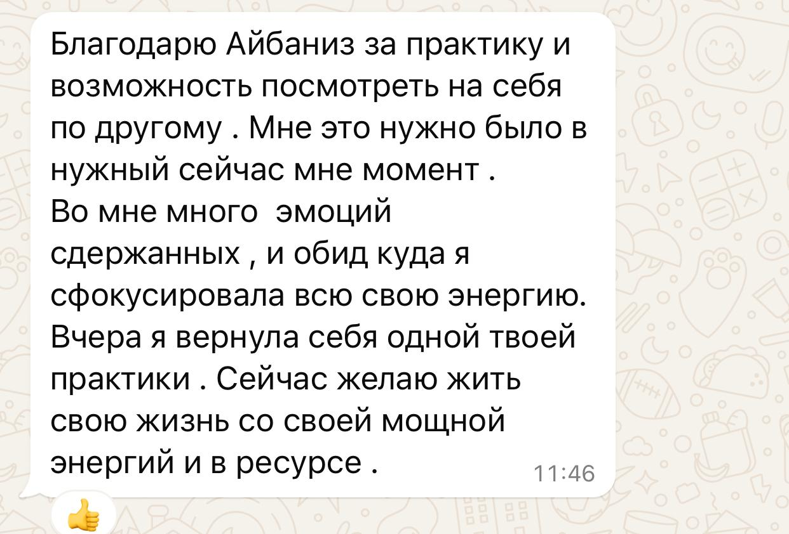

01
Заметить
Начать наблюдать за собой. Какая мысль возникает первой? Что происходит в теле? Какие чувства и реакции включаются в привычных ситуациях?
Айбаниз Велиева · Мета-психолог · Мета-проводник
Ты можешь многое понимать головой. Знать, что именно нужно изменить. Даже очень хотеть этого.
Но снова оказываешься в тех же отношениях, реакциях и сценариях.
Я помогаю увидеть то, что продолжает управлять тобой изнутри — чтобы постепенно возвращаться к себе и снова выбирать, как жить дальше.
Возвращение к себе
01В отношениях. В материнстве. В постоянном «надо». В чувстве вины. В попытке быть хорошей для всех.
В страхе разочаровать других. В заботе обо всех, кроме себя.
Ты можешь продолжать работать, заботиться о семье, решать вопросы, поддерживать других — и одновременно всё меньше понимать:
А чего хочу я?
Иногда это проявляется раздражением. Иногда — срывами на самых близких. Иногда — ощущением, что ничего не хочется.
А иногда внешне вообще ничего не происходит. Просто внутри всё чаще появляется:
«Я больше не хочу так жить».
Или ещё глубже: «А где во всём этом я?»
Вот с этой точки для меня начинается возвращение к себе.
Мой подход
Ты можешь понимать причины своих поступков, но снова реагировать привычным образом. И дело не всегда в недостатке силы воли.
Наши привычные программы проявляются через мысли, эмоции, телесные реакции и решения. Иногда мы даже не замечаем, как автоматически следуем им.
Но что, если ты — не только твои мысли, эмоции и привычные реакции? Что меняется, когда ты начинаешь наблюдать за ними?
Начать наблюдать за собой. Какая мысль возникает первой? Что происходит в теле? Какие чувства и реакции включаются в привычных ситуациях?
Увидеть за автоматической реакцией привычную программу. Перестать воспринимать каждую мысль и эмоцию как всю себя. Начать различать, где действует старый сценарий, а где твой выбор.
Постепенно находить пространство между тем, что происходит внутри, и своей реакцией. Слышать себя, свои желания и потребности. Действовать не только из страха, привычки или чувства долга, а из внутренней опоры.
С чем можно прийти
Не обязательно знать, что именно с тобой происходит, или уметь правильно сформулировать свой запрос. Иногда достаточно заметить: «Я больше не хочу жить по-прежнему».
Ты постоянно думаешь о будущем, переживаешь за близких, деньги, работу или отношения. Даже когда всё спокойно, внутри остаётся напряжение.
Мы можем исследовать, какие мысли, ожидания и привычные реакции поддерживают эту тревогу, и искать способы возвращаться к внутренней опоре.
Ты стараешься сохранить отношения, подстраиваешься, терпишь, боишься обидеть или потерять другого человека. А собственные желания постепенно уходят на второй план.
Мы исследуем, почему знакомые сценарии повторяются, что мешает слышать себя и как постепенно возвращать себе право на собственный выбор.
Семья, дети, работа, чужие ожидания и бесконечные обязанности. Ты привыкла быть нужной, удобной и ответственной.
Но когда спрашиваешь себя: «А чего хочу я?» — ответить становится трудно. Мы начинаем замечать, где привычное «надо» заглушает твои потребности и желания.
Ты уже многое осознала. Понимаешь, почему реагируешь определённым образом. Обещаешь себе больше так не делать.
Но в похожей ситуации снова включается привычная реакция. Здесь мы работаем с тем, как она возникает: через мысли, эмоции, ощущения в теле и автоматические сценарии.
Ты чувствуешь, что прежняя жизнь больше не подходит. Возможно, давно хочешь уйти с нелюбимой работы, изменить отношения или начать что-то своё.
Но появляются сомнения, страх неизвестности, чувство вины и множество причин отложить решение. Мы исследуем, что удерживает тебя и какой выбор действительно твой.
Ты привыкла справляться сама, всё предусматривать, держать ситуацию под контролем и не показывать слабость.
Но внутри накапливаются усталость и напряжение. Мы исследуем, почему так трудно отпустить контроль, принимать свои чувства и опираться на себя без постоянного давления.
Мой путь
04Личная история
Был период, когда я продолжала держаться за дело, которое уже давно перестало мне откликаться.
Внутри я знала, что больше не хочу этим заниматься. Но мысли находили причины остаться: «А вдруг всё изменится?», «А может, ещё пригодится?».
Когда я наконец приняла решение завершить этот этап, почувствовала огромное облегчение.
Для меня это стало одним из моментов осознания: иногда мы продолжаем жить по привычному сценарию, даже когда внутри уже давно выбрали другое.
Консультация
05Иногда не нужно ждать, пока станет совсем тяжело.
Можно просто остановиться и посмотреть на то, что происходит внутри.
Отзывы
06
А.
Я пришла с ощущением, что совершенно не понимаю, чего хочу от жизни. Постепенно начала замечать, что большую часть решений принимала из страха и желания соответствовать чужим ожиданиям.

М.
Самое ценное для меня — возможность говорить обо всём без ощущения, что меня пытаются исправить. В какой-то момент я просто начала слышать себя.

Е.
Я долго думала, что со мной что-то не так. Оказалось, что мне просто нужно было остановиться и посмотреть на свою жизнь честно.
Отзывы на 2GIS
2GIS · ★★★★★Пришел с ощущением пустоты и раздражения. Злился на всех, особенно на себя. Айбаниз помогла разобраться в причинах агрессии. Сейчас я намного спокойнее, появилось желание двигаться вперед.
Смотреть оригинал ↗Я жила в постоянном напряжении. Утром просыпалась уже уставшей. После работы с Айбаниз появилось ощущение свободы внутри. Жизнь стала мягче.
Смотреть оригинал ↗Частые вопросы
07Если не нашли ответа, можно просто написать мне.
На первой встрече мы знакомимся и говорим о том, что привело вас сейчас. Не нужно заранее готовить правильные слова или формулировать проблему.
Это совершенно нормально. Необязательно приходить с чётко сформулированным запросом. Мы можем начать именно с ощущения, с которым вы пришли.
Да. Онлайн-консультации проходят по видеосвязи. Вы можете находиться в любом городе или стране, где вам удобно и спокойно разговаривать.
Да, возможен и очный формат. Подробности о месте встречи можно уточнить при записи.
Продолжительность одной консультации — 60 минут.
Универсального количества встреч нет. Всё зависит от вашего запроса, целей и того, какой путь мы выберем вместе.
Что может измениться
08Психологическая работа не даёт универсальных обещаний. Но постепенно может появиться то, чего раньше не хватало: больше ясности, понимания себя и внутренней опоры.
Лучше понимать свои чувства, желания и реакции.
Замечать привычные сценарии и понимать, откуда они появились.
Чётче чувствовать собственные границы и потребности.
Меньше зависеть от чужих ожиданий и постоянного одобрения.
Принимать решения не только из страха, привычки или чувства долга.
Постепенно находить внутри себя больше опоры и ясности.
Не обещание, что жизнь станет идеальной. А возможность начать жить её более своей.
Контакты
09Если вы чувствуете, что готовы к разговору — оставьте заявку. Я свяжусь с вами и мы обсудим формат и удобное время.